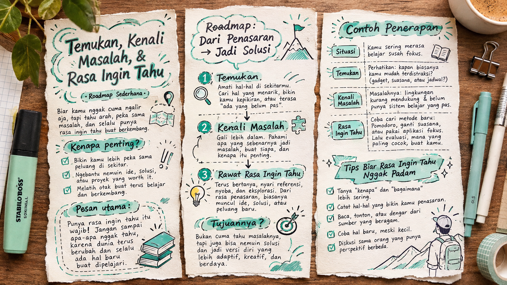
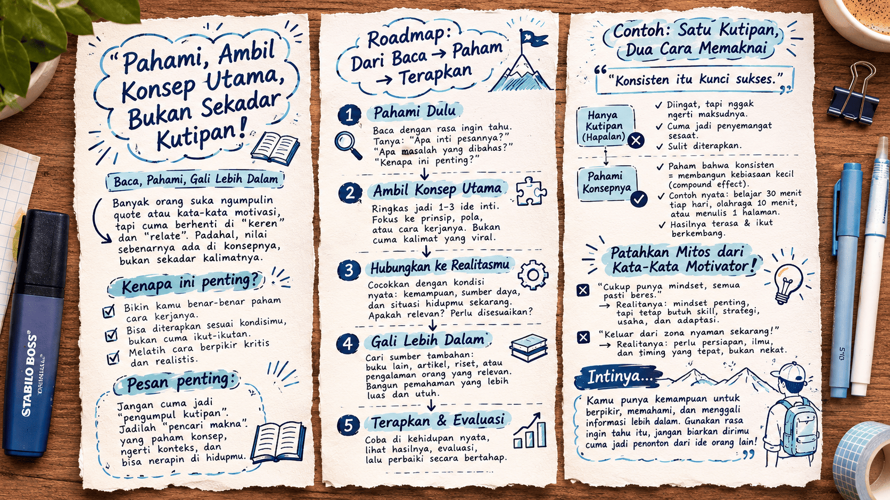
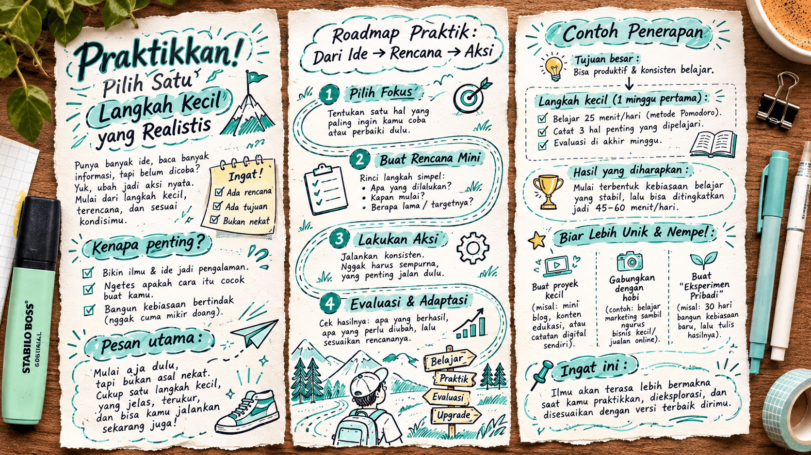
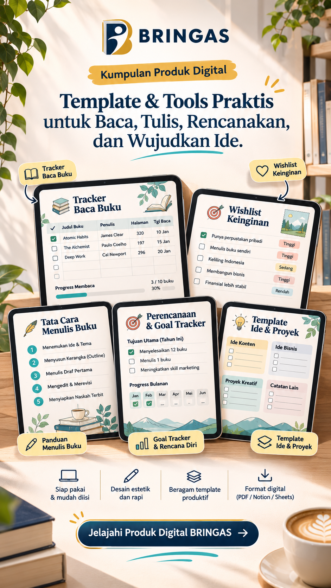

Buku hebat bisa mengubah cara kita melihat dunia. BRINGAS merangkum gagasan pentingnya menjadi bacaan yang lebih dekat dengan hidupmu.
Temukan buku dengan gagasan yang layak dibaca.
Ide yang bisa dipakai.
Bukan sekadar selesai dibaca.
Gagasan utama dikemas lebih mudah dicerna.
Hubungkan ide buku dengan situasi sehari-hari.
Pulang membawa perspektif dan aksi nyata.
PILIHAN EDITOR
Bacaan pilihan untuk memahami diri, membangun sesuatu, dan melihat dunia dari sudut berbeda.
TEMUKAN JALURMU
Tak harus tahu mau membaca apa. Mulai dari hal yang sedang ingin kamu pahami.
PERPUSTAKAAN IDE
Artikel ringkasan buku, bukan katalog jual-beli buku. Pilih satu ide untuk dibawa ke kehidupan nyata.
Masih banyak ide menarik di perpustakaan BRINGAS.
Coba kata kunci atau topik yang lain.
YOUR NEXT CHAPTER
Wawasan baru dimulai saat kita membaca dan cara kita berpikir bakal terbentuk, sehingga ingin memilih dan langsung bertindak. Jadikan setiap ringkasan sebagai awal, bukan garis akhir.
Pilih satu ide hari ini
Worksheet dan panduan ringkas untuk membantumu memahami ide, menyusun langkah, lalu mulai mempraktikkannya dalam keseharian.
Jelajahi produk digital

